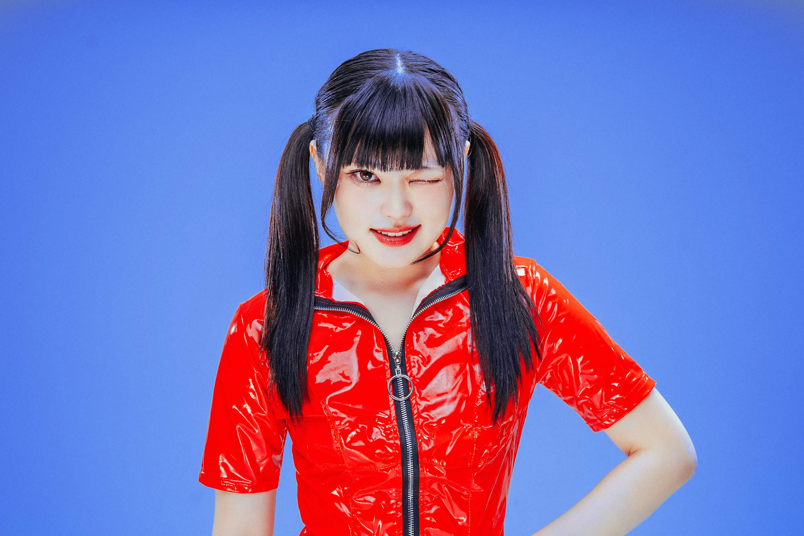
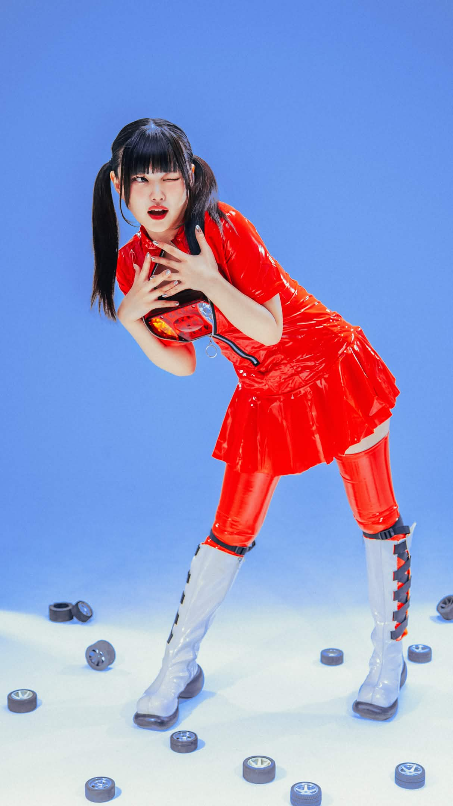
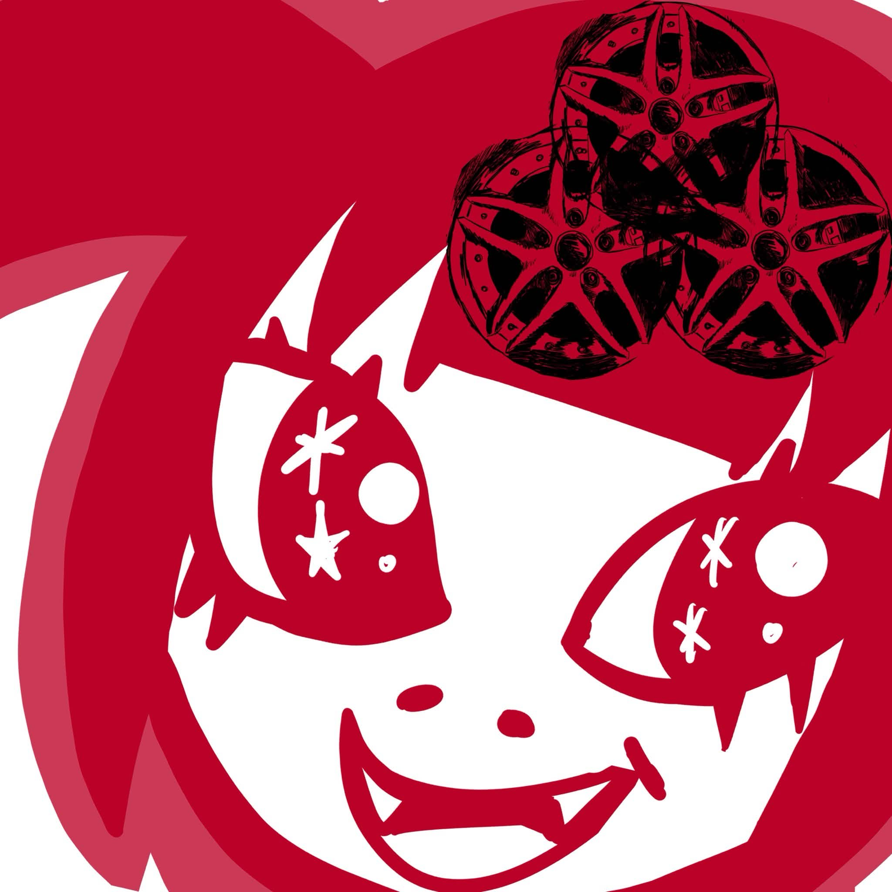

アイドル、ノイズ、インタラクティブな音楽表現。従来のアイドル像を拡張し、新たなフィールドと接続する。
SAKA-SAMA / 惑星通信社東京藝術大学大学院 映像研究科 在籍

アイドルとして人前に立つこと、ノイズを鳴らすこと、Maxで音と映像を制御すること。それぞれは別々の言語のようでいて、私の中ではひとつの問いとしてつながっている。
従来のアイドル像を拡張し、新しいフィールドへ接続する——その実験を、ステージでも、画面の中でも続けている。


For inquiries and bookings, please reach out via zetsukojapan.com.